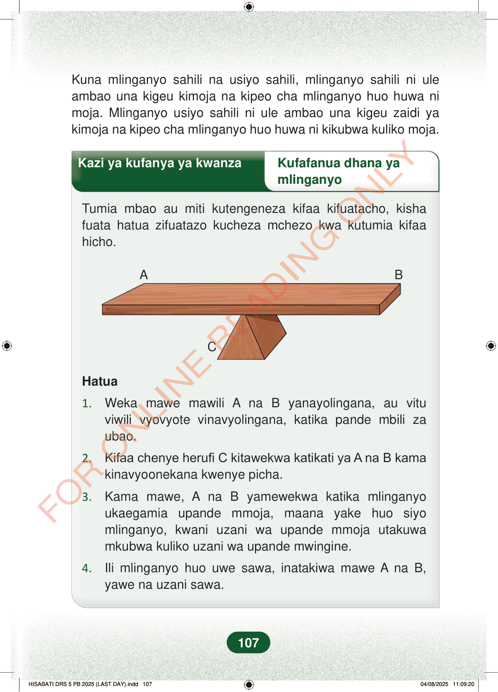

Kuna mlinganyo sahili na usiyo sahili, mlinganyo sahili ni uleambao una kigeu kimoja na kipeo cha mlinganyo huo huwa nimoja. Mlinganyo usiyo sahili ni ule ambao una kigeu zaidi yakimoja na kipeo cha mlinganyo huo huwa ni kikubwa kuliko moja.Kazi ya kufanya ya kwanzaKufafanua dhana yamlinganyoTumia mbao au miti kutengeneza kifaa kifuatacho, kishafuata hatua zifuatazo kucheza mchezo kwa kutumia kifaahicho.ABCHatua1.Weka mawe mawili A na B yanayolingana, au vituviwili vyovyote vinavyolingana, katika pande mbili zaubao.2.Kifaa chenye herufi C kitawekwa katikati ya A na B kamakinavyoonekana kwenye picha.3.Kama mawe, A na B yamewekwa katika mlinganyoukaegamiaupande mmoja, maana yake huo siyomlinganyo, kwaniuzani wa upande mmoja utakuwamkubwa kuliko uzani wa upandemwingine.4.Ili mlinganyo huo uwe sawa, inatakiwa mawe A na B,yawe na uzani sawa.107
Kuna mlinganyo sahili na usiyo sahili, mlinganyo sahili ni ule ambao una kigeu kimoja na kipeo cha mlinganyo huo huwa ni moja. Mlinganyo usiyo sahili ni ule ambao una kigeu zaidi ya kimoja na kipeo cha mlinganyo huo huwa ni kikubwa kuliko moja.
Kazi ya kufanya ya kwanza Kufafanua dhana ya
mlinganyo
Tumia mbao au miti kutengeneza kifaa kifuatacho, kisha fuata hatua zifuatazo kucheza mchezo kwa kutumia kifaa hicho.
A B
C
Hatua
1. Weka mawe mawili A na B yanayolingana, au vitu viwili vyovyote vinavyolingana, katika pande mbili za ubao.
2. Kifaa chenye herufi C kitawekwa katikati ya A na B kama kinavyoonekana kwenye picha.
3. Kama mawe, A na B yamewekwa katika mlinganyo ukaegamia upande mmoja, maana yake huo siyo mlinganyo, kwani uzani wa upande mmoja utakuwa mkubwa kuliko uzani wa upande mwingine.
4. Ili mlinganyo huo uwe sawa, inatakiwa mawe A na B, yawe na uzani sawa.
107
Kuna mlinganyo sahili na usiyo sahili, mlinganyo sahili ni ule ambao una kigeu kimoja na kipeo cha mlinganyo huo huwa ni moja.Mlinganyo usiyo sahili ni ule ambao una kigeu zaidi ya kimoja na kipeo cha mlinganyo huo huwa ni kikubwa kuliko moja.Kazi ya kufanya ya kwanzaKufafanua dhana ya mlinganyoTumia mbao au miti kutengeneza kifaa kifuatacho, kisha fuata hatua zifuatazo kucheza mchezo kwa kutumia kifaa hicho.Ubao umelazwa juu ya kiunzi cha katikati kama mlinganyo wa pande mbili.ABCHatua1.Weka mawe mawili A na B yanayolingana, au vitu viwili vyovyote vinavyolingana, katika pande mbili za ubao.2.Kifaa chenye herufi C kitawekwa katikati ya A na B kama kinavyoonekana kwenye picha.3.Kama mawe, A na B yamewekwa katika mlinganyo ukaegamia upande mmoja, maana yake huo siyo mlinganyo, kwani uzani wa upande mmoja utakuwa mkubwa kuliko uzani wa upande mwingine.4.Ili mlinganyo huo uwe sawa, inatakiwa mawe A na B, yawe na uzani sawa.